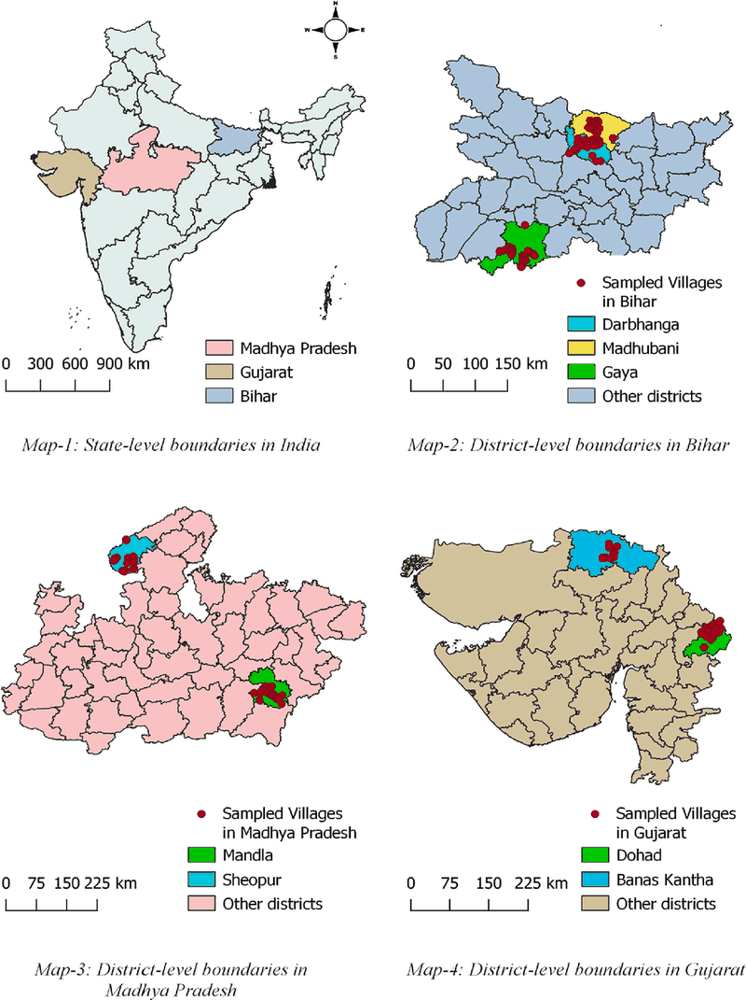

COVID-19, Information Management by Local Governments, and Food Consumption
India’s 2020 lockdown cut rural households’ food spending sharply. In villages whose councils managed COVID information well, the loss was smaller, and landless households gained the most.
Can good local government cushion a national shock?
During COVID-19, Indian states asked village councils (Gram Panchayats) to manage the pandemic on the ground. This paper asks whether councils that informed and organised people better protected what households could put on the table.
The same households, before and after the lockdown

Scoring each council’s information work
The Information Management Response Index scores each council on communication, coordination, information dissemination and resource mobilization, using 73 yes-or-no items. Wrong advice lowers the score: only 45 percent of councils gave accurate information on social distancing, and about one-third said plain water was an effective sanitizer.
Better councils, smaller losses
Landless households
For landless households, good information management brought an extra boost on top of the average effect, and also lowered their risk of food and nutrition poverty.